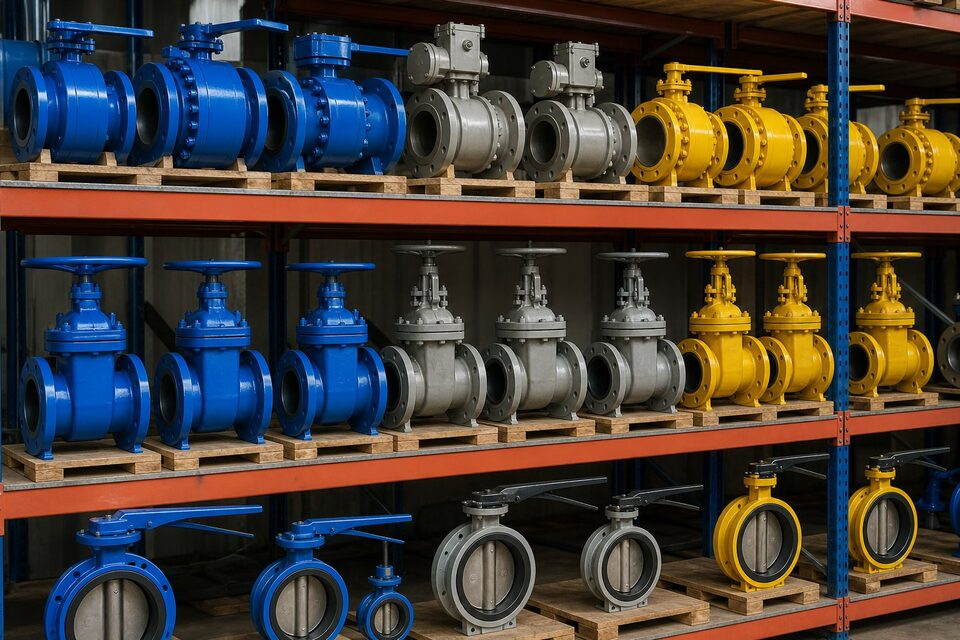

رویکرد پروژهمحور به جای کلیگویی
مقایسه منطقهای برندها اغلب به کلیگویی منجر میشود؛ واقعیت بازار این است که در هر منطقه طیفی از کیفیت وجود دارد. تصمیم درست، ارزیابی هر سازنده بر اساس معیارهای قابل سنجش و متناسب با حساسیت سرویس است.

معیارهای ارزیابی سازنده
| معیار | چرا مهم است |
|---|---|
| گواهینامههای کیفیت و محصول | اثبات نظاممندی کنترل کیفیت |
| سوابق تحویل مشابه | کاهش ریسک عملکردی |
| حضور در وندورلیست | تایید کارفرمایان بزرگ |
| توان مستندسازی | پاسخ به الزامات بازرسی |
| خدمات و قطعات | پشتیبانی طول عمر |
معادله قیمت و کیفیت
- قیمت اولیه فقط بخشی از هزینه چرخه عمر است.
- توقف پروژه معمولاً چند برابر اختلاف قیمت هزینه دارد.
- در نقاط کمحساس، گزینههای اقتصادی با گواهینامه منطقیاند.
- در نقاط حساس، کیفیت و سابقه بر قیمت مقدم است.
فرآیند پیشنهادی انتخاب
- حساسیت سرویس را دستهبندی کنید.
- فهرست سازندگان دارای گواهینامه و سابقه تهیه کنید.
- وندورلیست کارفرما را کنترل کنید.
- پیشنهاد فنی-مالی را با معیارهای یکسان مقایسه کنید.
- بازرسی شخص ثالث را در قرارداد لحاظ کنید.
چکلیست ارزیابی سازنده
- اعتبار و محدوده گواهینامههای کیفیت را کنترل کنید.
- سوابق تحویل در سرویس مشابه را بخواهید.
- وضعیت حضور در وندورلیستهای معتبر را بررسی کنید.
- توان مستندسازی و بازرسی را ارزیابی کنید.
- شرایط گارانتی و خدمات را مقایسه کنید.
- نمونه یا رفرنس بهرهبرداری را در صورت امکان بازدید کنید.
دامهای رایج
- تصمیم صرفاً بر اساس قیمت اولیه.
- اعتماد به نام منطقه بدون بررسی مصداق.
- نادیده گرفتن زمان تحویل در پروژههای زمانبندیشده.
- غفلت از الزامات بازرسی شخص ثالث.
- عدم بررسی سازگاری مدارک با الزامات کارفرما.
در نهایت، نتیجه ارزیابی باید در قالب یک مقایسه فنی-مالی مستند ارائه شود: معیارها، وزندهی بر اساس حساسیت سرویس، امتیاز هر گزینه و پیشنهاد نهایی. این مستند، مبنای دفاع از تصمیم خرید در برابر کارفرما و واحد فنی است.
تجربه بازار ایران نشان میدهد موفقترین خریدها آنهایی بودهاند که خریدار پیش از استعلام، حساسیت سرویس را دستهبندی و برای هر دسته حداقلهای فنی را تعریف کرده است. با این روش، هم از پرداخت هزینه اضافی برای نقاط کمحساس جلوگیری میشود و هم ریسک نقاط حساس کاهش مییابد. این رویکرد را میتوان برای شیرآلات، فلنجها و سایر تجهیزات تعمیم داد.
جمعبندی
به جای سوال «کدام منطقه بهتر است؟»، بپرسید «کدام سازنده برای این سرویس اثباتشده است؟». پاسخ این سوال، خرید کمریسک را تضمین میکند.
سوالات رایج
آیا میتوان گفت یک منطقه ذاتاً بهتر است؟
خیر؛ در هر منطقه هم سازندگان دارای گواهینامه و سابقه و هم سازندگان ضعیف وجود دارند. معیارهای واقعی، گواهینامهها، سوابق تحویل و انطباق با الزامات پروژه است، نه صرفاً کشور سازنده.
مهمترین معیار ارزیابی سازنده چیست؟
گواهینامههای کیفیت و محصول، سوابق تحویل مشابه، توان مستندسازی و در پروژههای بزرگ، حضور در وندورلیست کارفرما. این معیارها ریسک خرید را به طور واقعی کاهش میدهند.
چرا قیمت برندهای مختلف متفاوت است؟
به دلیل تفاوت در عمود کنترل کیفیت، تستها، متریال تریم، خدمات پس از فروش و هزینههای ساخت. قیمت پایینتر همیشه به معنای ارزش بالاتر نیست؛ باید هزینه چرخه عمر را دید.
برای سرویسهای بسیار حساس چه رویکردی توصیه میشود؟
سازندگانی با سابقه اثباتشده در همان سرویس، گواهینامههای معتبر و توان بازرسی شخص ثالث. در این نقاط، ریسک توقف پروژه بر قیمت مقدم است.
مطالب مرتبط
- راهنمای تأیید صلاحیت تأمینکننده
- راهنمای وندورلیست پروژههای نفتی
- راهنمای تضمین کیفیت در تامین تجهیزات صنعتی
- راهنمای کامل گواهی مواد و تست
- راهنمای انتخاب شیر بر اساس کلاس فشار
با ارائه الزامات پروژه و حساسیت سرویس، گزینههای تامین دارای گواهینامه و سابقه به همراه مقایسه فنی-مالی ارائه میشود.
مشاهده صفحه محصول ← ثبت RFQ همین محصولتامین این تجهیزات را به پیشرو تجهیز فرتاک بسپارید
شرکت پیشرو تجهیز فرتاک تامینکننده تخصصی تجهیزات صنعتی برای پروژههای نفت، گاز، پتروشیمی، فولاد و نیروگاهی است. برای دریافت پیشنهاد فنی و قیمت، استعلام (RFQ) خود را ثبت کنید تا کارشناسان مهندسی فروش در کوتاهترین زمان پاسخ دهند.
- تامین شیرآلات صنعتیمنبعیابی از سازندگان دارای گواهینامه
- بازرسی و کنترل کیفیتهماهنگی بازرسی شخص ثالث